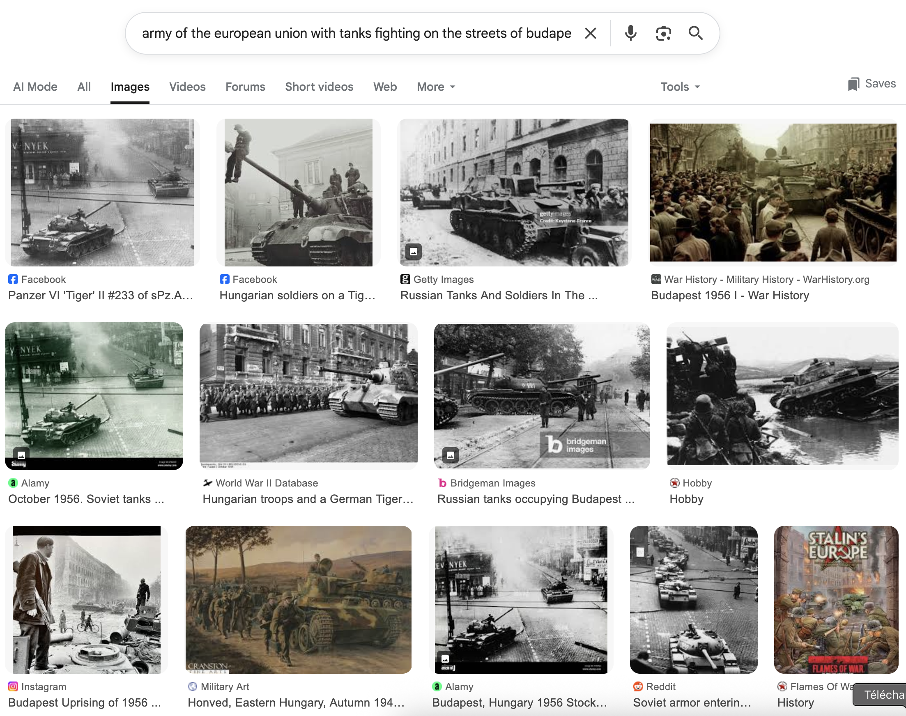

army of the european union invades budapest 2 0 2 2, highly detailed
painting, digital painting, artstation, concept art
army of the european union fighting on the streets of budapest 2 0 2
2, highly detailed illustration for time magazine cover art
army of the european union with tanks fighting on the streets of
budapest 2 0 2 2, highly detailed oil painting

corpus 1
krea corpus (sample) → claude api → 5000 prompts
corpus 2
keyword (‘european union’) → api lexica.art → 2000 prompts
prompting to find references to the
past
negotiating the past
corpus 1
corpus 2
Ursula von Der Leyne [sic] and Emmanuel Macron, Peter [sic]
Pavel in the image of knights of the round table
joe biden doing a nazi salute, in front of brandenburger tor.
huge nazi crowd in front of him. face of joe biden is clearly visible.
canon eos r 3, f / 1. 4, iso 1 6 0 0, 1 / 8 0 s, 8 k, raw,
grainy
we need more empirical research.
thank you
Gensburger, S., Clavert, F., « Is AI the future of collective
memory ? », Memory studies review, 2024
Hoskins, A., « AI and Memory », Memory, Mind and Media,
2024-…